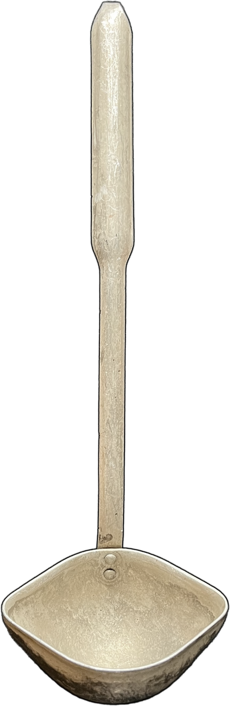

Jak odróżnić wynalazek od dizajnu, dizajn od sztuki?
Do której grupy należy ta aluminiowa chochelka? Jest stara, sentymentalna, podniszczona, aluminiowa i piekielnie wygodna – „cudownie użyteczna". A czy to nie powinno być definicją dobrego dizajnu? Pomyśl, czym dla Ciebie są dizajn, sztuka i wynalazczość.
Czy patriarchalna narracja w historii projektowania ma znaczenie? Jaką rolę w tej wizji mogą odgrywać narzędzia służące niewidzialnej pracy? A co z marketingiem i sprzedażą? Narodziny kapitalizmu to początek dizajnu i usprawnień pracy w kuchni, czyż nie? Czy w takim razie patrzysz na gadżet czy na narzędzie? Mieszkasz w konkretnym miejscu na Ziemi – masz swoją tradycję. Czy Twoje ulubione narzędzia kuchenne są uniwersalne?
Wyjmując narzędzia z zaplecza kuchni, pozbawiamy je na chwilę oczywistego kontekstu. Przyglądamy się im uważniej. Malowanie ich portretów zbliża nas do zrozumienia, czym różnią się dizajn, sztuka i wynalazczość.
Regulamin
- Widzowie mogą swobodnie włączać się w działania kolektywu poprzez malowanie portretów narzędzi kuchennych – własnych lub dostępnych na miejscu.
- Osoba tworząca wybiera sama podłoże i narzędzia spośród udostępnionych na potrzeby happeningu.
- Kolektyw może wykonać portret narzędzia przyniesionego przez widzów, ale właściciele narzędzi nie mogą ingerować w wybór charakteru portretu. Portrety powstają w stylistyce, którą samo narzędzie narzuci osobie tworzącej.
- Kolektyw tworzy portrety w swoim własnym tempie i nie wolno zgłaszać uwag do jego tempa pracy.
- Kolektyw zastrzega sobie prawo do publikacji wizerunków wszystkich ulubionych narzędzi kuchennych.
